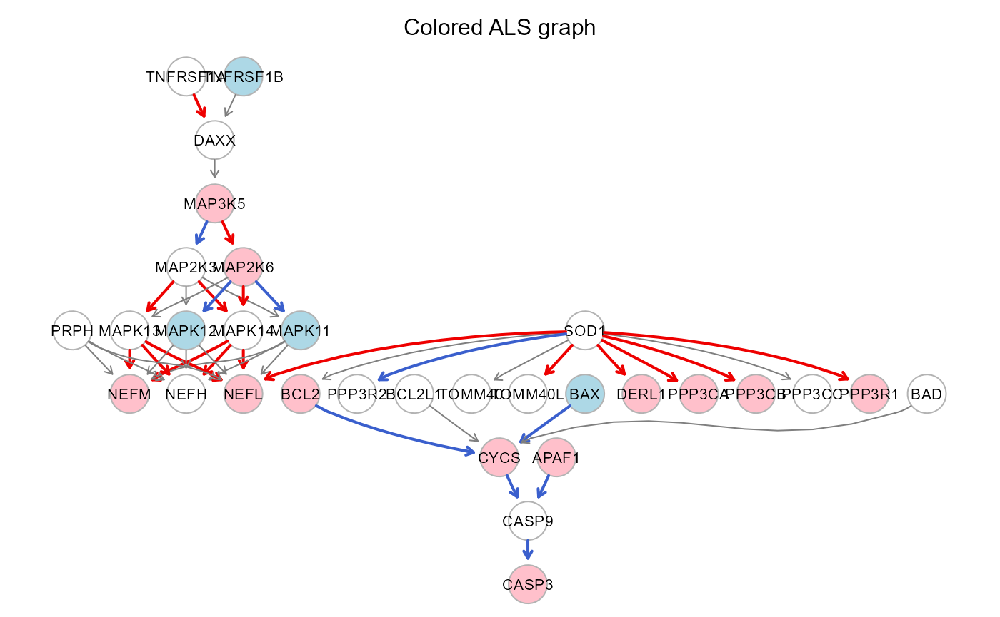
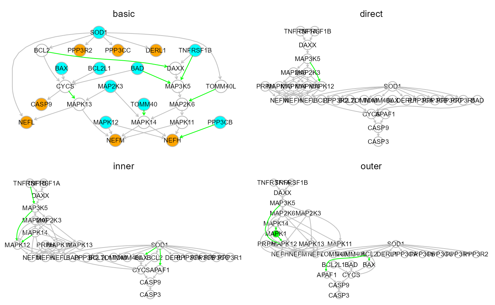
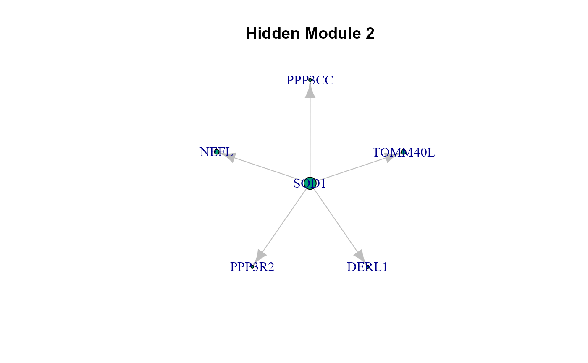
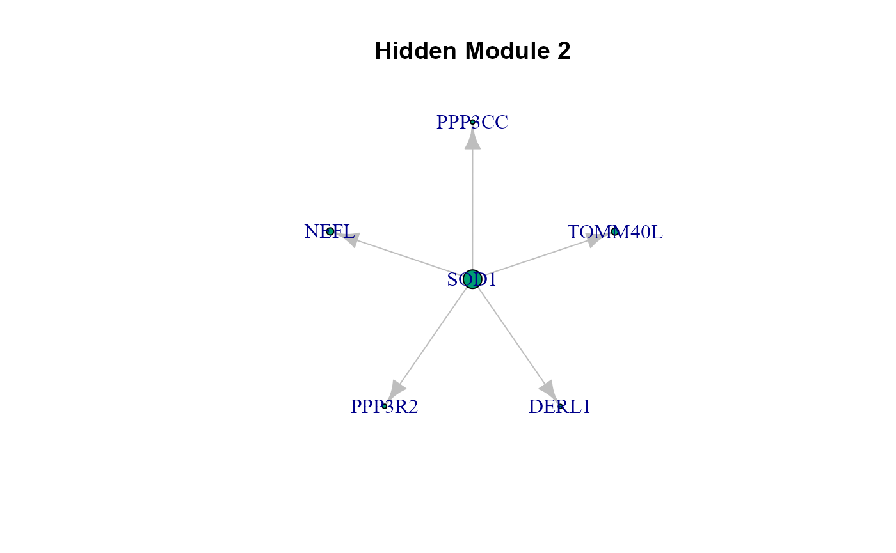
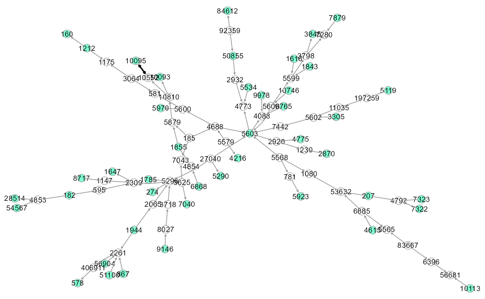
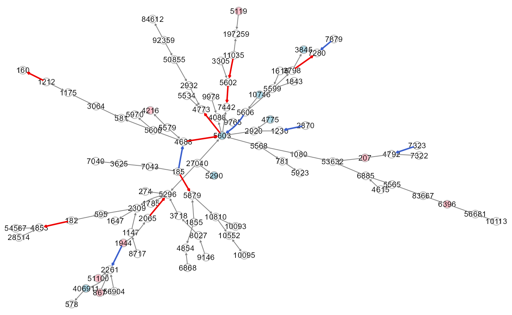

Get started
Fernando Paluzzi, Mario Grassi
2025-12-15
Source:vignettes/SEMgraph_tutorial.Rmd
SEMgraph_tutorial.RmdThe following section offers an overview of SEMgraph functionalities. Starting from model fitting, it will gently introduce functions for model learning, weighting, clustering, and evaluation of causal effects and model perturbation. This section includes:
- Supplementary packages installation
- Causal effects estimation, model learning, extension, and clusterinng (Amyotrophic Lateral Sclerosis dataset)
- Gene Set Analysis and perturbed subnetwork/module extraction (Frontotemporal Dementia dataset)
1. Supplementary packages.
Besides the required packages, SEMgraph suggests the use of the R package org.Hs.eg.db in the Bioconductor project, for gene ID conversion. SEMgraph uses entrez IDs to avoid special chatacters (such as hyphens or slashes), but it can use official gene symbols as labels.
if (!require("BiocManager", quietly = TRUE))
install.packages("BiocManager")
BiocManager::install("org.Hs.eg.db")The package SEMdata contains useful high-throughput sequencing data, reference networks, and pathways for SEMgraph training:
#devtools::install_github("fernandoPalluzzi/SEMdata")
2. Amyotrophic Lateral Sclerosis (ALS) data analysis.
2.1. The ALS dataset.
Load the necessary libraries for run the tutorial:
SEMdata provides the ALS RNA-seq dataset of 139 cases and 21 healthy controls, from Tam O.H. et al., 2019 (GEO accession: GSE124439). Raw data were pre-processed applying batch effect correction to remove data production center and brain area biases. Using multidimensional scaling-based clustering, ALS-specific and HC-specific clusters were generated. Misclassified samples were blacklisted and removed from the dataset. Since the expression of many genes is significantly different from Gaussian, we apply a nonparanormal transform to relax the normality assumption.
# ALS input graph
summary(alsData$graph)## IGRAPH 5d44052 DNW- 32 47 --
## + attr: name (v/c), weight (e/n)
# Label graph: Convert Entrez identifiers to gene symbols
V(alsData$graph)$label <- mapIds(org.Hs.eg.db, V(alsData$graph)$name,
column = 'SYMBOL',
keytype = 'ENTREZID')
# ALS RNA-seq expression data
dim(alsData$exprs)## [1] 160 17695
# group = {1: case, 0: control} vector
table(alsData$group)##
## 0 1
## 21 139
# Nonparanormal transform
data.npn <- transformData(alsData$exprs)$data## Conducting the nonparanormal transformation via shrunkun ECDF...done.2.2. Model fitting.
SEMgraph offers three main modes of model fitting: (i) common model fitting, (ii) node perturbation evaluation, and (iii) edge perturbation evaluation. SEMgraph will automatically take care of applying shrinkage methods in case of high dimensionality (#variables >> #subjects), heuristics and parallelization settings for large graphs. In addition, perturbation evaluation enables the extraction of differentially regulated nodes (DRNs) and edges (DREs).
# ALS model fitting (sem0)
# The whole dataset is used to fit the model and perturbation is not evaluated (group = NULL)
sem0 <- SEMrun(graph = alsData$graph, data = data.npn)## NLMINB solver ended normally after 1 iterations
##
## deviance/df: 10.92504 srmr: 0.2858859
# verbose output
#summary(sem0$fit)
# short output
head(parameterEstimates(sem0$fit))## lhs op rhs est se z pvalue ci.lower ci.upper
## 1 10452 ~ 6647 0.037 0.079 0.466 0.641 -0.118 0.192
## 2 1432 ~ 5606 0.397 0.082 4.839 0.000 0.236 0.557
## 3 1432 ~ 5608 0.578 0.082 7.047 0.000 0.417 0.738
## 4 1616 ~ 7132 0.245 0.110 2.236 0.025 0.030 0.461
## 5 1616 ~ 7133 -0.036 0.110 -0.324 0.746 -0.251 0.180
## 6 4217 ~ 1616 -0.074 0.079 -0.943 0.346 -0.229 0.080
# ALS model fitting (sem1)
# Common model and group influence on nodes (node perturbation)
sem1 <- SEMrun(graph = alsData$graph, data = data.npn, group = alsData$group)## NLMINB solver ended normally after 6 iterations
##
## deviance/df: 11.02582 srmr: 0.274885
##
## Brown's combined P-value of node activation: 7.104523e-08
##
## Brown's combined P-value of node inhibition: 0.01068785
# verbose output
#summary(sem1$fit)
# short output
head(parameterEstimates(sem1$fit))## lhs op rhs est se z pvalue ci.lower ci.upper
## 1 10452 ~ group -0.150 0.078 -1.913 0.056 -0.303 0.004
## 2 1432 ~ group -0.042 0.073 -0.578 0.563 -0.186 0.101
## 3 1616 ~ group 0.025 0.080 0.314 0.754 -0.131 0.181
## 4 317 ~ group 0.218 0.077 2.832 0.005 0.067 0.370
## 5 4217 ~ group 0.176 0.078 2.273 0.023 0.024 0.328
## 6 4741 ~ group 0.343 0.075 4.547 0.000 0.195 0.490
#Colored group effects on nodes and direct effects adjusted for group
#(red/pink: activation, blue/lightblue: repression)
gplot(sem1$graph, main="Colored ALS graph")
# ALS model fitting (sem2)
# One model for each group and group influence on edges (edge perturbation)
sem2 <- SEMrun(alsData$graph, data.npn, alsData$group, fit = 2)## Estimating optimal shrinkage intensity lambda (correlation matrix): 0.4313
##
## NLMINB solver ended normally after 7 iterations
##
## deviance/df: 16.08203 srmr: 0.2971455
##
## Brown's combined P-value of edge activation: 0.004597565
##
## Brown's combined P-value of edge inhibition: 0.9534567
# verbose output
#summary(sem2$fit)
# short output
head(parameterEstimates(sem2$fit))## lhs op rhs est se z pvalue ci.lower ci.upper group
## 1 10452 ~ 6647 0.198 0.214 0.928 0.353 -0.221 0.618 1
## 2 1432 ~ 5606 0.101 0.209 0.482 0.630 -0.309 0.511 1
## 3 1432 ~ 5608 0.346 0.209 1.654 0.098 -0.064 0.757 1
## 4 1616 ~ 7132 0.120 0.240 0.499 0.618 -0.350 0.590 1
## 5 1616 ~ 7133 0.118 0.240 0.493 0.622 -0.352 0.588 1
## 6 4217 ~ 1616 -0.097 0.217 -0.445 0.656 -0.522 0.329 1
# Perturbed graph elements
# Differentially Regualted Nodes (DRNs)
DRN <- sem1$gest[sem1$gest$pvalue < 0.05,]
nrow(DRN)## [1] 16
head(DRN)## lhs op rhs est se z pvalue ci.lower ci.upper
## 4 317 ~ group 0.218 0.077 2.832 0.005 0.067 0.370
## 5 4217 ~ group 0.176 0.078 2.273 0.023 0.024 0.328
## 6 4741 ~ group 0.343 0.075 4.547 0.000 0.195 0.490
## 8 4747 ~ group 0.223 0.062 3.620 0.000 0.102 0.344
## 9 54205 ~ group 0.188 0.069 2.730 0.006 0.053 0.322
## 10 5530 ~ group 0.160 0.072 2.224 0.026 0.019 0.301
# Differentially Regulated Edges (DREs)
DRE <- sem2$dest[sem2$dest$pvalue < 0.05,]
nrow(DRE)## [1] 3
head(DRE)## lhs op rhs d_est d_se d_z pvalue d_lower d_upper
## 28 5532 ~ 6647 0.449 0.227 1.982 0.047 0.005 0.893
## 30 5534 ~ 6647 0.584 0.229 2.546 0.011 0.135 1.034
## 34 5603 ~ 5606 0.496 0.239 2.073 0.038 0.027 0.965
# Residual Iterative Conditional Fitting (RICF)
# Fast node perturbation fitting for large graphs (SE estimation disabled)
ricf1 <- SEMrun(alsData$graph, data.npn, alsData$group, algo = "ricf")## RICF solver ended normally after 2 iterations
##
## deviance/df: 11.02558 srmr: 0.2747457
##
## Brown's combined P-value of node activation: 7.074471e-08
##
## Brown's combined P-value of node inhibition: 0.009522031
head(parameterEstimates(ricf1$fit))## lhs op rhs est
## 1 317 ~ group 0.218
## 2 572 ~ group -0.106
## 3 581 ~ group -0.161
## 4 596 ~ group 0.157
## 5 598 ~ group 0.107
## 6 836 ~ group 0.245
# Other possible output
#summary(ricf1$fit)
head(ricf1$gest)## Test Stat tail pvalue
## 317 t 2.8143 >< 0.0073759375
## 572 t -1.3373 >< 0.1889142563
## 581 t -2.0472 >< 0.0349464466
## 596 t 2.0117 >< 0.0549088354
## 598 t 1.3567 >< 0.1708148899
## 836 t 3.6671 >< 0.0004791965
# Constrained Gaussian Graphical Modeling (CGGM)
# Fast edge perturbation fitting for large graphs
cggm2 <- SEMrun(alsData$graph, data.npn, alsData$group, fit = 2, algo = "cggm")## GGM (de-biased nodewise L1) solver ended normally after 0 iterations
##
## deviance/df: 16.11538 srmr: 0.2977598
##
## Brown's combined P-value of edge activation: 8.441818e-05
##
## Brown's combined P-value of edge inhibition: 0.7365028
head(parameterEstimates(cggm2$fit))## lhs op rhs est se z_test pvalue ci.lower ci.uppper group
## 1 10452 ~ 6647 0.349 0.204 1.707 0.088 -0.052 0.750 1
## 2 84134 ~ 6647 0.607 0.173 3.497 0.000 0.267 0.947 1
## 3 54205 ~ 581 -0.584 0.175 -3.340 0.001 -0.927 -0.242 1
## 4 54205 ~ 572 0.272 0.177 1.534 0.125 -0.076 0.620 1
## 5 54205 ~ 596 0.308 0.197 1.567 0.117 -0.077 0.694 1
## 6 54205 ~ 598 0.283 0.197 1.435 0.151 -0.103 0.669 1
# Other possible output
#summary(cggm2$fit$Group_0)
#summary(cggm2$fit$Group_1)
head(cggm2$dest)## lhs op rhs d_est d_se d_z pvalue d_lower d_upper
## 1 10452 ~ 6647 -0.363 0.221 -1.638 0.101 -0.797 0.071
## 2 84134 ~ 6647 -0.443 0.193 -2.301 0.021 -0.821 -0.066
## 3 54205 ~ 581 0.146 0.194 0.751 0.453 -0.235 0.527
## 4 54205 ~ 572 -0.273 0.194 -1.404 0.160 -0.654 0.108
## 5 54205 ~ 596 -0.512 0.209 -2.449 0.014 -0.923 -0.102
## 6 54205 ~ 598 -0.381 0.217 -1.754 0.079 -0.806 0.0452.3. Total effect estimation as Average Causal Effect (ACE).
Suppose having a path P = X -> M1 -> … -> Mk -> Y between two nodes X and Y, connected through k mediators. The total effect (TE = DE + IE) is the sum of the direct effect X -> Y, DE = b(X,Y), and the indirect effect through the mediators, IE = b(X,M1)*b(M1,M2)*…*b(Mk,Y). One convenient way of estimating the TE is through the definition of ACE by Pearl J, 1998. The simplest estimation of the TE as ACE is possible in directed acyclic graphs (DAGs), thorugh linear regression. The parent set pa(X) of X blocks all backdoor (i.e., confounding) paths from X to Y, and the ACE is equal to the coefficient b(X,Y) in a multiple regression Y ~ X + pa(X).
# Average Causal Effect (ACE)
# optimal adjustement set (type = "optimal")
# source -> sink ACE (effect = "source2sink")
# Benjamini-Hochberg multiple test adjustment (method = "BH")
# 5% significance level (alpha = 0.05)
ace <- SEMace(graph = alsData$graph, data = data.npn,
type = "optimal", effect = "source2sink",
method = "BH", alpha = 0.05)##
## Frequency distribution of path length from X to Y :
## 1 2 3 4 5
## 12 1 3 1 6
##
## ACE= 1 of 23 ACE= 2 of 23 ACE= 3 of 23 ACE= 4 of 23 ACE= 5 of 23 ACE= 6 of 23 ACE= 7 of 23 ACE= 8 of 23 ACE= 9 of 23 ACE= 10 of 23 ACE= 11 of 23 ACE= 12 of 23 ACE= 13 of 23 ACE= 14 of 23 ACE= 15 of 23 ACE= 16 of 23 ACE= 17 of 23 ACE= 18 of 23 ACE= 19 of 23 ACE= 20 of 23 ACE= 21 of 23 ACE= 22 of 23 ACE= 23 of 23## [1] 10
head(ace)## pathL sink op source est se z pvalue ci.lower ci.upper
## 66471 1 4747 <- 6647 0.514 0.063 8.113 0 0.390 0.639
## 317 2 836 <- 317 0.472 0.061 7.737 0 0.352 0.592
## 11 1 79139 <- 6647 0.522 0.068 7.723 0 0.390 0.655
## 13 1 5532 <- 6647 0.521 0.068 7.700 0 0.389 0.654
## 16 1 5535 <- 6647 -0.462 0.070 -6.565 0 -0.600 -0.324
## 6647 4 836 <- 6647 0.430 0.067 6.433 0 0.299 0.561
# SOD1-CASP3 path extraction and fitting
source <- as.character(ace$source[6])
sink <- as.character(ace$sink[6])
path <- SEMpath(alsData$graph, data.npn, alsData$group,
from = source, to = sink,
path = "directed",
verbose = TRUE)## Path: 6647 -> 836 size- 5 4 --
##
## NLMINB solver ended normally after 1 iterations
##
## deviance/df: 24.52913 srmr: 0.2068706
##
## Brown's combined P-value of node activation: 4.363726e-06
##
## Brown's combined P-value of node inhibition: 0.9267063
# Extract all directed paths, fit them, and evaluate their perturbation:
paths <- pathFinder(alsData$graph, data.npn, alsData$group, ace = ace)## ACE= 1 of 10 ACE= 2 of 10 ACE= 3 of 10 ACE= 4 of 10 ACE= 5 of 10 ACE= 6 of 10 ACE= 7 of 10 ACE= 8 of 10 ACE= 9 of 10 ACE= 10 of 10
## Found 3 significant ACEs with > 2 nodes
print(paths$dfp)## pathId sink op source n.nodes n.edges dev_df srmr V.pv.act V.pv.inh
## 1 P317 836 <- 317 3 2 21.328 0.091 0.000042 0.232830
## 2 P6647 836 <- 6647 5 4 24.526 0.207 0.000004 0.926706
## 3 P581 836 <- 581 4 3 3.699 0.046 0.000959 0.1791032.4. Model estimation strategies.
The input graph is a picture of the current knowledge. Besides the
evaluation of known relationships, data can be used to infer new ones.
Four model search strategies are implemented in the
modelSearch function. The basic one is completely
data-driven and requires an input graph only to establish the initial
topological order. In the direct strategy, The input graph
structure is improved through direct (i.e., adjacent) link search,
followed by reference-based (“gnet” argument) interaction validation and
import from the reference network, with no mediators (d = 1). In the
outer strategy, new interactions and connectors (i.e.,
mediators) will be searched and imported from the reference network.
This strategy is analogous to the “outer” one, but disables external
mediator search. In other words, new indirect paths are generated by
adding new interactions between nodes only from the input model.
# Model Search with search = "basic" and beta = 0.1
# The beta argument determines the minimum absolute LASSO coefficient
# for an edge to be included in the output model.
# Reducing beta (up to 0) will increase model complexity.
# This strategy is data-driven (gnet = NULL) and
# only direct connections are added (d = 0; i.e., no new mediators),
# these edges are colored in green
model <- modelSearch(graph = alsData$graph,
data = data.npn,
gnet = NULL, d = 0,
search = "basic",
beta = 0.1,
method = "BH",
alpha = 0.05,
verbose = FALSE)## Step1: BAP deconfounding...
## Step2: DAG estimation...
## Step3: DAG resize (remove edges/add nodes)...
##
## None DAG resize for basic search !
##
## Done.
# Convert Entrez identifiers to gene symbols
V(model$graph)$label <- mapIds(org.Hs.eg.db, V(model$graph)$name,
column = 'SYMBOL',
keytype = 'ENTREZID')## 'select()' returned 1:1 mapping between keys and columns
#Colored plot: orange/cyan: sink/source nodes, green/gray: new/old edges
gplot(model$graph, main="ALS model")
# Node perturbation of the ALS model
pert <- SEMrun(model$graph, model$data, alsData$group)## NLMINB solver ended normally after 7 iterations
##
## deviance/df: 1.859277 srmr: 0.0818185
##
## Brown's combined P-value of node activation: 4.195065e-05
##
## Brown's combined P-value of node inhibition: 0.002192286
#Colored plot: red/pink: activation, blue/lightblue: repression
gplot(pert$graph, main="ALS model")
# SOD1-NEFM path extraction and fitting
path <- SEMpath(pert$graph, model$data, alsData$group,
from = "6647", #SOD1
to = "4741", #NEFM
path = "directed",
verbose = TRUE)## Path: 6647 -> 4741 size- 11 13 --
##
## NLMINB solver ended normally after 1 iterations
##
## deviance/df: 1.612045 srmr: 0.0658653
##
## Brown's combined P-value of node activation: 1.152006e-07
##
## Brown's combined P-value of node inhibition: 0.03466489
Other possible strategies:
# Direct strategy.
# - Knowledge-based estimation (gnet should be a directed reference network).
# - Only direct interactions are inferred (d is fixed to 1).
# - New interactions are inferred from data, during the execution.
# - A smaller starting beta value is suggested (beta = 0.05)
model1 <- modelSearch(graph = alsData$graph,
data = data.npn,
gnet = kegg, d = 1,
search = "direct",
beta = 0.05,
method = "BH",
alpha = 0.05,
verbose = FALSE)## Step1: BAP deconfounding...
## Step2: DAG estimation...
## Step3: DAG resize (remove edges/add nodes)...
##
## Done.
# Inner strategy.
# - The reference network is used to validate new interactions and mediators.
# - Inferred mediators must already belong to the input graph.
# - Larger d values increase model complexity (suggested: d = 2).
model2 <- modelSearch(graph = alsData$graph,
data = data.npn,
gnet = kegg, d = 2,
search = "inner",
beta = 0.05,
method = "BH",
alpha = 0.05,
verbose = FALSE)## Step1: BAP deconfounding...
## Step2: DAG estimation...
## Step3: DAG resize (remove edges/add nodes)...
##
## Done.
# Outer strategy.
# - Knowledge-based estimation (gnet should be a directed reference network).
# - Up to (d - 1) mediators can be imported from the reference network.
# - Larger d values increase model complexity (suggested: d = 2).
model3 <- modelSearch(graph = alsData$graph,
data = data.npn,
gnet = kegg, d = 2,
search = "outer",
beta = 0.05,
method = "BH",
alpha = 0.05,
verbose = FALSE)## Step1: BAP deconfounding...
## Step2: DAG estimation...
## Step3: DAG resize (remove edges/add nodes)...
##
## Done.
# Outer strategy adds new nodes from kegg without node labels:
V(model3$graph)$label <- mapIds(org.Hs.eg.db, V(model3$graph)$name,
'SYMBOL', 'ENTREZID')## 'select()' returned 1:1 mapping between keys and columns
# graph models visualization:
par(mfrow=c(2,2), mar=rep(2,4))
gplot(model$graph, main="basic")
gplot(model1$graph, main="direct")
gplot(model2$graph, main="inner")
gplot(model3$graph, main="outer")
Step 1-3 of modelSearch() with search=“outer” run the following functions:
# Step 1: Bow-free Acyclic Path (BAP) search.
BAP <- SEMbap(graph = alsData$graph,
data = data.npn,
method = "BH",
alpha = 0.05,
verbose = FALSE)## Bow-free covariances search. Use method: cggm ...
## Number of bow-free covariances / df : 220 / 420
## Max parent set(S) / Sparsity idx(s) : 10 / 4
## Number of clusters / number of nodes: 2 / 31
# Step 2: Directed Acyclic Graph (DAG) estimation.
DAG <- SEMdag(graph = alsData$graph,
data = BAP$data,
LO = "TO",
beta = 0.05,
lambdas = NA,
penalty = TRUE,
verbose = FALSE)## Node Linear Ordering with TO setting
# Step 3: Graph re-size with external interactome.
rsg <- resizeGraph(g = list(alsData$graph, DAG$dag.new),
gnet = kegg,
d = 2,
v = TRUE,
verbose = FALSE)## edge set= 1 of 17 edge set= 2 of 17 edge set= 3 of 17 edge set= 4 of 17 edge set= 5 of 17 edge set= 6 of 17 edge set= 7 of 17 edge set= 8 of 17 edge set= 9 of 17 edge set= 10 of 17 edge set= 11 of 17 edge set= 12 of 17 edge set= 13 of 17 edge set= 14 of 17 edge set= 15 of 17 edge set= 16 of 17 edge set= 17 of 17
##
## n. edges to be evaluated: 17
## n. edges selected from interactome: 5## 'select()' returned 1:1 mapping between keys and columns
gplot(rsg)
2.5. Communities and factor scores.
The modular structure of biological networks could often reveal local effects and perturbed routes and communities hidden within a larger and more complex context. SEMgraph allows to detect and estimate these local properties as follows.
# Improved ALS model (model$graph) clustering and scoring, using a latent variable
# "hidden" model (LV), edge betweeness clustering (EBC) algorithm, and a minimum
# cluster size of 5 nodes.
# Other clustering algorithms can be exploited (e.g., the walktrap community
# detection algorithm, WTC) to improve the interpretation of results.
LV <- clusterScore(model$graph, model$data, alsData$group,
type = "ebc",
HM = "LV",
size = 5)## modularity = 0.4816345
##
## Community sizes
## 2 3 1
## 6 9 10
##
## Model converged: TRUE
## SRMR: 2.629474e-09
table(LV$membership)##
## 1 2 3
## 10 6 9
head(parameterEstimates(LV$fit))## lhs op rhs est se z pvalue ci.lower ci.upper
## 1 LV1 ~ group 0.043 0.249 0.171 0.864 -0.446 0.532
## 2 LV2 ~ group -0.471 0.238 -1.975 0.048 -0.938 -0.004
## 3 LV3 ~ group 0.744 0.287 2.588 0.010 0.181 1.307
## 4 LV1 ~~ LV1 1.135 0.127 8.944 0.000 0.887 1.384
## 5 LV2 ~~ LV2 1.037 0.116 8.944 0.000 0.809 1.264
## 6 LV3 ~~ LV3 1.506 0.168 8.944 0.000 1.176 1.836
# Clustering only (no scores calculation)
C <- clusterGraph(model$graph, type = "ebc", HM = "LV", size = 5)## modularity = 0.4816345
##
## Community sizes
## 2 3 1
## 6 9 10
# Cluster plot utility
cg <- cplot(graph = model$graph, membership = LV$membership, verbose = TRUE) 

list(cg)## [[1]]
## [[1]]$graph
## IGRAPH 87f1ee5 DN-- 25 33 --
## + attr: name (v/c), color (v/n), label (v/c), M (v/n), color (e/c)
## + edges from 87f1ee5 (vertex names):
## [1] 1432 ->4744 1432 ->4741 5600 ->4744 5600 ->4741 6300 ->4744
## [6] 6300 ->4741 5532 ->4744 5603 ->4741 5603 ->4747 6647 ->84134
## [11] 6647 ->596 6647 ->4747 6647 ->5535 6647 ->5533 6647 ->79139
## [16] 54205->5603 54205->842 5606 ->1432 5606 ->5603 5608 ->1432
## [21] 5608 ->5600 10452->1432 84134->5608 4217 ->5608 572 ->54205
## [26] 572 ->4217 7133 ->4217 7133 ->1616 1616 ->4217 581 ->54205
## [31] 596 ->54205 596 ->1616 598 ->54205
##
## [[1]]$HM1
## IGRAPH 89acadd DN-- 10 13 --
## + attr: name (v/c), color (v/n), label (v/c), M (v/n), color (e/c)
## + edges from 89acadd (vertex names):
## [1] 1432 ->4744 1432 ->4741 5600 ->4744 5600 ->4741 6300 ->4744 6300 ->4741
## [7] 5532 ->4744 5603 ->4741 5606 ->1432 5606 ->5603 5608 ->1432 5608 ->5600
## [13] 10452->1432
##
## [[1]]$HM2
## IGRAPH 89acb77 DN-- 6 5 --
## + attr: name (v/c), color (v/n), label (v/c), M (v/n), color (e/c)
## + edges from 89acb77 (vertex names):
## [1] 6647->84134 6647->4747 6647->5535 6647->5533 6647->79139
##
## [[1]]$HM3
## IGRAPH 89acbe4 DN-- 9 10 --
## + attr: name (v/c), color (v/n), label (v/c), M (v/n), color (e/c)
## + edges from 89acbe4 (vertex names):
## [1] 54205->842 572 ->54205 572 ->4217 7133 ->4217 7133 ->1616
## [6] 1616 ->4217 581 ->54205 596 ->54205 596 ->1616 598 ->54205
# Colored cluster plot:
#Set label and node colors
V(cg$graph)$label <- mapIds(org.Hs.eg.db, V(cg$graph)$name,
column = 'SYMBOL',
keytype = 'ENTREZID')## 'select()' returned 1:1 mapping between keys and columns
V(cg$graph)$color[V(cg$graph)$color == 2] <- "lightsalmon"
V(cg$graph)$color[V(cg$graph)$color == 3] <- "lightgreen"
V(cg$graph)$color[V(cg$graph)$color == 4] <- "lightyellow"
gplot(cg$graph)
# Cluster extraction, fitting, and perturbation evaluation
cls <- extractClusters(graph = model$graph,
data = model$data,
group = alsData$group,
membership = LV$membership)## cluster= 1 of 3 cluster= 2 of 3 cluster= 3 of 3##
##
## Found 3 clusters with > 5 nodes
print(cls$dfc)## cluster n.nodes n.edges dev_df srmr V.pv.act V.pv.inh
## 1 HM1 10 13 2.283 0.068 0.000000 0.014398
## 2 HM2 6 5 1.895 0.056 0.926485 0.052001
## 3 HM3 9 10 1.917 0.077 0.122245 0.126563
3. Frontotemporal Dementia (FTD) data analysis.
The FTD dataset coming with SEMdata is a data matrix of 256 rows (subjects; 150 FTD patients and 150 healthy controls) and 16560 columns (genes) containing the value of the first principal component of DNAme levels, obtained applying a principal component analysis to methylated CpG sites within the promoter region, for each gene (genes with unmethylated CpGs in both conditions were discarded). This dataset was derived from the study by Li Y. et al., 2014 (GEO accession: GSE53740).
# DNAme PC1 data
head(ftdDNAme$pc[, 1:5])## 5934 64778 7419 87 6422
## GSM1299651 -1.7161298 -2.6574432 1.6903166 1.8872660 -2.7313434
## GSM1299653 -1.9041925 -1.7208698 3.1574408 1.2142120 -1.2901646
## GSM1299655 -1.4719359 0.5008334 1.5854376 0.2190518 -0.2458186
## GSM1299658 0.5574782 1.6449859 0.8602589 -0.8407574 0.8762756
## GSM1299659 -0.6374026 -0.6834186 0.4256889 -0.3274641 -0.3908066
## GSM1299660 -0.3370616 -0.1508169 -0.2946679 -1.1251541 0.3142813
dim(ftdDNAme$pc1)## [1] 256 16560
# Defining groups
group <- ftdDNAme$group
table(group)## group
## 0 1
## 151 105
# Nonparanormal transform
pc1.npn <- transformData(ftdDNAme$pc1)$data## Conducting the nonparanormal transformation via shrunkun ECDF...done.
head(pc1.npn[, 1:5])## 5934 64778 7419 87 6422
## GSM1299651 -1.2321143 -1.1917615 1.2965578 1.36667575 -1.6670305
## GSM1299653 -1.3666758 -0.9197906 2.4600162 1.08068480 -0.9197906
## GSM1299655 -0.9971162 0.1242948 1.2116994 0.48939828 -0.2555973
## GSM1299658 0.4893983 0.7142177 0.6766221 -0.42356794 0.5922594
## GSM1299659 -0.3913234 -0.4127740 0.2047113 0.01487886 -0.4020264
## GSM1299660 -0.2249971 -0.1342943 -0.2967658 -0.67662208 0.15433313.1. Gene Set Analysis (GSA).
In absence of a conceptual model (i.e., one built from an expert’s indication), the input graph can be inferred from data, literature or both of them. In the following example, we will take advantage of our FTD dataset and known FTD-associated pathways from the KEGG database. To this end, GSA can be used to assess the actual perturbation of known pathways, given data, and extract those genes (i.e., seeds) underlying perturbed routes. Seeds can also be defined using knowledge, such as importing a list of known disease-associated genes, or from other data sources (e.g. mutational, transcriptional, or epigenetic data).
#load KEGG pathways
kegg.pathways <- SEMgraph::kegg.pathways
length(kegg.pathways) #225## [1] 225## [1] "EGFR tyrosine kinase inhibitor resistance"
## [2] "Endocrine resistance"
## [3] "Antifolate resistance"
## [4] "Platinum drug resistance"
## [5] "mRNA surveillance pathway"
## [6] "RNA degradation"
# Known FTD-related pathway selection
ftd.pathways <- c("MAPK signaling pathway",
"Protein processing in endoplasmic reticulum",
"Endocytosis",
"Wnt signaling pathway",
"Notch signaling pathway",
"Neurotrophin signaling pathway")
# Pathway extraction
j <- which(names(kegg.pathways) %in% ftd.pathways)
# Gene set analysis (GSA) with 5000 permutations
ftd.gsa <- SEMgsa(kegg.pathways[j], pc1.npn, group, n_rep = 5000)## k = 1 MAPK signaling pathway
## k = 2 Protein processing in endoplasmic reticulum
## k = 3 Endocytosis
## k = 4 Wnt signaling pathway
## k = 5 Notch signaling pathway
## k = 6 Neurotrophin signaling pathway
print(ftd.gsa$gsa)## No.nodes No.DEGs pert
## Protein processing in endoplasmic reticulum 171 18 up act
## Endocytosis 252 21 <NA>
## Neurotrophin signaling pathway 119 3 up act
## Wnt signaling pathway 166 0 <NA>
## MAPK signaling pathway 294 16 up act
## Notch signaling pathway 59 5 down act
## pNa pNi
## Protein processing in endoplasmic reticulum 2.206778e-09 3.991478e-01
## Endocytosis 1.468533e-08 1.193403e-05
## Neurotrophin signaling pathway 4.480197e-06 2.574927e-02
## Wnt signaling pathway 5.376131e-06 3.229422e-02
## MAPK signaling pathway 1.634371e-05 2.145900e-05
## Notch signaling pathway 2.056711e-03 1.666035e-04
## PVAL ADJP
## Protein processing in endoplasmic reticulum 4.413556e-09 2.648134e-08
## Endocytosis 2.937066e-08 1.762239e-07
## Neurotrophin signaling pathway 8.960395e-06 5.376237e-05
## Wnt signaling pathway 1.075226e-05 6.451357e-05
## MAPK signaling pathway 3.268743e-05 1.961246e-04
## Notch signaling pathway 3.332071e-04 1.999242e-03## [1] 603.2. Network weighting and perturbed backbone extraction.
While seeds pinpoint nodes with specific properties, edges can be weighted on the base of quantitative and phenotype data to define preferential ways of information exchange (e.g., perturbation propagation) through the network. SEMgraph offers different alternatives to generate data-driven weights, but the fastest of them is based on the Fisher’s “r-to-z” method, to test the group difference between correlation coefficients of pairs of interacting nodes (Fisher, 1915). Both seeds and weights can be used to extract the perturbed core(s) of a network to highlight its disease-associated components.
# KEGG interactome weighting
#load KEGG interactome
kegg<- SEMgraph::kegg
summary(kegg) #DNW- 5007 44755## IGRAPH b46d4ee DNW- 5007 44755 --
## + attr: name (v/c), weight (e/n)
W <- weightGraph(kegg, pc1.npn, group, method = "r2z")
summary(W) #DNW- 4242 34975 ## IGRAPH 9aa7cef DNW- 4242 34975 --
## + attr: name (v/c), pv (v/n), zsign (v/n), weight (e/n), zsign (e/n),
## | pv (e/n)
# Perturbed backbone as a Steiner tree (Kou's algorithm)
# A Steiner tree is the minimum cost (distance) graph
# including all the specified seeds.
ST <- SEMtree(W, data = pc1.npn, seed = seed, type = "ST", eweight = "pvalue")
summary(ST) #DNW- 92 (90 directed + 1 bidirected)## IGRAPH 9bf5bc9 DNW- 92 92 --
## + attr: pv (v/n), zsign (v/n), name (v/c), color (v/c), weight (e/n),
## | color (e/c), width (e/n)
# Colored plot: green, seed nodes; white, connection nodes
gplot(ST, l="fdp")
# Perturbation evaluation with raw data
sem1 <- SEMrun(ST, pc1.npn, group)## NLMINB solver ended normally after 15 iterations
##
## deviance/df: 5.894448 srmr: 0.4100293
##
## Brown's combined P-value of node activation: 0.000430902
##
## Brown's combined P-value of node inhibition: 3.476108e-13
# Data deconfounding and perturbation evaluation
# When a DAG is used for causal network inference, missing edges
# are often masked by unmeasured confounding variables.
# This step might reduce this effect through Bow-free Acyclic Path (BAP)
# search and data deconfounding.
adj.pc1 <- SEMbap(ST, pc1.npn, method = "bonferroni", alpha = 5E-06)## DAG conversion : TRUE
## Bow-free covariances search. Use method: cggm ...
## Number of bow-free covariances / df : 1208 / 4096
## Max parent set(S) / Sparsity idx(s) : 9 / 4
## Number of clusters / number of nodes: 2 / 85
adj.sem1 <- SEMrun(ST, adj.pc1$data, group)## NLMINB solver ended normally after 8 iterations
##
## deviance/df: 1.614218 srmr: 0.0736439
##
## Brown's combined P-value of node activation: 0.03622072
##
## Brown's combined P-value of node inhibition: 0.01004111
#Colored plot: red/pink: activation, blue/lightblue: repression
gplot(adj.sem1$graph, l="fdp")
# Tree agglomerative hierarchical clustering (TAHC).
# This allow us to detect possible communities within our Steiner tree.
C <- clusterGraph(ST, type = "tahc")
cg <- cplot(ST, membership=C)
summary(cg)## Length Class Mode
## graph 92 igraph list
## HM1 25 igraph list
## HM2 32 igraph list
## HM3 22 igraph list
## HM4 13 igraph list
#Colored plot: set 2nd cluster (HM2), node color and size
cg2 <- cg$HM2
V(cg2)$color <- ifelse(V(cg2)$name %in% seed, "green", "white")
V(cg2)$size <- 3*degree(cg2, mode="total")
# Convert Entrez identifiers to gene symbols
V(cg2)$label <- mapIds(org.Hs.eg.db, V(cg2)$name, 'SYMBOL', 'ENTREZID')## 'select()' returned 1:1 mapping between keys and columns
# Plot cluster (green nodes are seed nodes)
gplot(cg2, l = "neato")
3.3. Locating differentially connected genes.
The SEMgraph differential connected inference (DCI) module enables the detection of perturbed nodes and edges for large graphs. This module is useful when the aim is to find a perturbed backbone of essential disease-associated nodes nodes.
# Input graph as the union of FTD KEGG pathways
gU <- Reduce(igraph::union, kegg.pathways[j])
gU <- properties(gU)[[1]]## Frequency distribution of graph components
##
## n.nodes n.graphs
## 1 3 2
## 2 4 1
## 3 7 2
## 4 8 1
## 5 10 2
## 6 12 2
## 7 586 1
##
## Percent of vertices in the giant component: 63.8 %
##
## is.simple is.dag is.directed is.weighted
## TRUE FALSE TRUE FALSE
##
## which.mutual.FALSE which.mutual.TRUE
## 3564 8
summary(gU) #DNW- 586 3572## IGRAPH a607d02 DN-- 586 3572 --
## + attr: name (v/c)
# DCI with the WTC clustering algorithm
gD <- SEMdci(gU, pc1.npn, group, type = "wtc", method = "BH", alpha = 0.05)## modularity = 0.6539108
##
## Community sizes
## 14 17 20 25 18 22 21 11 8 4 13 23 10 16 12 15 9 19 24 26
## 2 2 2 2 3 3 4 5 6 7 7 7 8 8 9 13 15 15 25 26
## 6 1 3 2 5 7
## 27 47 68 71 86 118
##
## fit cluster = 1
## fit cluster = 2
## fit cluster = 3
## fit cluster = 5
## fit cluster = 6
## fit cluster = 7
## fit cluster = 9
## fit cluster = 15
## fit cluster = 19
## fit cluster = 24
## fit cluster = 26
## Done.
summary(gD) #DN-- 74 61## IGRAPH a8a5cbd DN-- 74 61 --
## + attr: name (v/c)
# Perturbation evaluation of the 1st component of gD
gC1 <- properties(gD)[[1]]## Frequency distribution of graph components
##
## n.nodes n.graphs
## 1 2 7
## 2 3 5
## 3 5 1
## 4 14 1
## 5 26 1
##
## Percent of vertices in the giant component: 35.1 %
##
## is.simple is.dag is.directed is.weighted
## TRUE TRUE TRUE FALSE
##
## which.mutual.FALSE
## 27
sem1 <- SEMrun(gC1, pc1.npn, group)## NLMINB solver ended normally after 6 iterations
##
## deviance/df: 12.68914 srmr: 0.3918051
##
## Brown's combined P-value of node activation: 0.2123603
##
## Brown's combined P-value of node inhibition: 4.865384e-05
sem2 <- SEMrun(sem1$graph, pc1.npn, group, fit = 2)## NLMINB solver ended normally after 2 iterations
##
## deviance/df: 5.099692 srmr: 0.1504874
##
## Brown's combined P-value of edge activation: 0.01959594
##
## Brown's combined P-value of edge inhibition: 9.001465e-06
# Colored DCI plot
gC1 <- sem2$graph
# Convert Entrez identifiers to gene symbols
V(gC1)$label <- mapIds(org.Hs.eg.db, V(gC1)$name, "SYMBOL", "ENTREZID")## 'select()' returned 1:1 mapping between keys and columns
Note: the global statistics suggest a poor fit, and de-correlation could be performed; however, a significant perturbation between the two conditions is observed, as shown in the extracted subgraph by pink (beta > 0: activation) or light blue (beta < 0: repression) nodes, and red (delta > 0: activation) or blue (delta < 0: repression) edges, respectively.
References
Supplementary material of Grassi M, Palluzzi F, Tarantino B. SEMgraph: an R package for causal network inference of high-throughput data with structural equation models. Bioinformatics, 2022 Aug 30; 38(20):btac567. https://doi.org/10.1093/bioinformatics/btac567